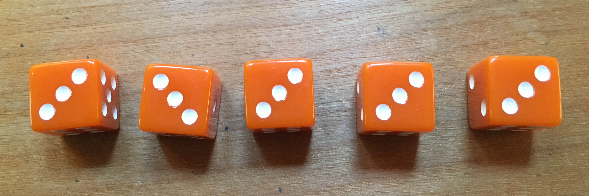
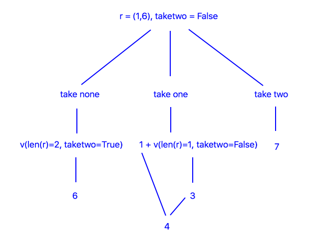
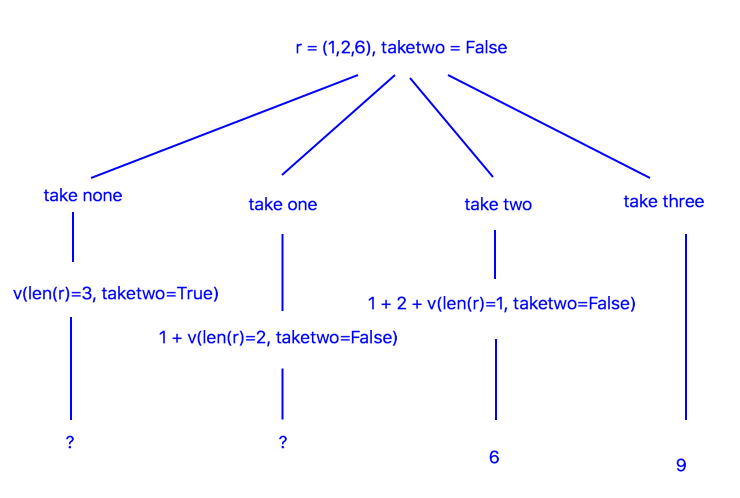

Winning at Dice with Backward Induction

All threes—the infamous hallelujah roll.
Backward Induction
Backward induction identifies optimal actions by working backward in time. It starts at the last step of a problem, identifies the optimal action there, then uses that action to identify the optimal action at the second-to-last step, continuing until the current step.
It may seem like this requires us to simulate the problem backwards every time we want to make a decision (an expensive procedure) but we actually don’t have to: there’s a nice cacheing technique that allows us to simulate only once. We’ll walk through this cacheing technique, but first let’s look at the game we’re going to solve.
Threes: How to Play
Threes is a two player game. The first player starts by rolling all five dice and collects whichever they want to keep. After collecting they roll the remaining dice and collect again, continuing until they’ve collected all the dice. When all the dice are collected the player’s score is counted as the sum of their dice where threes count as zero. The second player rolls the same way and the player with the lowest score wins.
Dice are collected in an interesting way. Players are supposed to collect at least one dice after each roll, but if they roll all high dice and don’t want to take any they can choose to collect no dice and re-roll but with the consequence of having to collect at least two on the re-roll.
As-per the rules, players can’t skip re-rolls and, e.g., take at least three dice on a re-re-roll, and players can’t re-roll the last die, they have to take it. An example game is shown in the appendix at the end of this post.
Game Representation
Here’s how we’ll represent Threes:
-
Game-states consist of a list of rolled dice values and a binary take-two indicator. For example, the state indicates a roll of where at least two dice have to be taken. The value is written as and the other outcomes are written in sorted order. The sorted order is useful because later we’re going to refer to dice using an index into the roll list and we want low indices to correspond to low dice values.
-
Actions are an integer indicating the number of dice to take. Since we’re trying to minimize score, we’ll assume that these are the lowest dice. Note that , where is the roll-list and is its length/number of elements.
-
Game Dynamics: Game dynamics are determined by a pseudo-random number generator that gives each dice a uniformly random outcome. Agent actions are determined by a policy that maps states to actions. Note that an agent is fully specified by its policy and in this sense is its policy.
Rolling First
If you roll first, you don’t know what your opponent’s score is going to be, so your best bet is to minimize final score.
To find the policy that does this, we’ll make a probabilistic model of dice outcomes and use it to predict which actions will result in which scores, then we’ll choose an action that minimizes expected score and take this as our policy.
In technical slang we’re treating the game as a Markov decision process and we’re solving it using backward induction on the Bellman equation, but an easier way to understand what’s going on is to look at a few examples.
Suppose there are two dice left and we don’t have to take two and we roll . The diagram below shows the decisions we can make.

The quantity indicates how many points we expect to collect on the next roll, assuming we select the corresponding action. For example, because rolling two dice and collecting them both gives a total of on average. The bottom of the tree contains numbers that are used to make our final decision. In this case is the optimal decision because cost plus value is minimum.
One more example, then we can generalize the solution:

In this case we can’t choose an action because we don’t know or , but we can approximate them using simulations. For example, is the situation shown in the first tree, and we were able to make a decision there, so we’ll simulate this situation several times and average the score of the optimal action there. The result is . Using a similar technique we find that .
Thus the optimal action is . Notice that we had to simulate backward starting from the end of the game. This is the defining property of backward induction. To prevent redundant simulations, we cache values so we only have to simulate once per state, afterwards we can just look-up the information we no to act.
The Value Function. Once we have all the values it’s simple to choose the optimal action from an arbitrary state: choose the action that minimizes immediate points plus next-state value. Notice that depends on the number of dice being rolled and not on the dice values themselves. This means that the game can be represented more simply in terms of the number of dice rolled and the take-two indicator. The values are organized in a table called the value function. Here it is:
| len(r) | taketwo | v |
|---|---|---|
| 1 | F | 3 |
| 2 | T | 6 |
| 2 | F | 4 |
| 3 | T | 7 |
| 3 | F | 4.8 |
| 4 | T | 7 |
| 4 | F | 5.3 |
| 5 | T | 7 |
| 5 | F | 5.6 |
The Optimal Policy. The value function and the heuristic “choose the action which minimizes immediate points plus next-state value” defines the optimal policy. Here’s the formula:
is the number of points gained from the immediate action, and is the value of the next state assuming action is taken.
Experiments. Let’s do some experiments to see how well the optimal policy plays. Here’s a comparison between the optimal policy and a policy that takes one lowest dice on every roll. 30,000 games were simulated:
Here’s a comparison between the optimal policy and my policy. To approximate my policy I played Threes three hundred times and recorded my score after each game (yes I actually did that). On average the optimal policy gets a score of 5.6, while I get a score of 5.8. Evidently I play approximately optimally–this is very re-assuring.
Rolling Second
If we roll second we know what score to beat, so instead of acting to minimizing final score we’ll act to maximize probability of winning. Again it’s helpful to start with an example.
Suppose we roll two dice, resulting in , and the opponent’s score is and our score-so-far is , and we don’t have to take two. We’ll parameterize the problem in terms of the gap between our score and the opponent’s score. In order to win or tie we have to preserve . In this example . The decision tree below shows the actions we can take:
The values, i.e., the probabilities of winning, are computed by simulation. For we simulate collecting two dice, and for we simulate taking one dice with an update to to account for the dice we took. The results are and . Thus we choose . Note that we didn’t consider because it makes .
The Value Function. The value function is a little more complicated compared to when we were rolling first; it now depends on , which can have up to 30 values. Instead of listing all the values in a table, we’ll put them in a code snippet that also shows how to compute them.
# adjust these as needed
taketwo = False
nleft = 5 # referred to as "len(r)" in the post
d = [0,1,2,4,5,6] # possible dice values
def get_pwin(nleft,taketwo,g):
# return the probability of winning for the given input state. these are the values of the value function.
if (nleft, taketwo) == (1, False):
return [0.1667, 0.3334, 0.5001, 0.5001, 0.6668, 0.8335, 1.000][g]
elif (nleft, taketwo) == (2, True):
return [0.028, 0.083, 0.166, 0.221, 0.304, 0.414, 0.581, 0.691, 0.774, 0.829, 0.912, 0.967, 0.995][g]
elif (nleft, taketwo) == (2, False):
return [0.093, 0.238, 0.398, 0.508, 0.623, 0.724, 0.849, 0.914, 0.950, 0.972, 0.993, 0.999, 0.999][g]
elif (nleft, taketwo) == (3, True):
return [0.0162, 0.0582, 0.1297, 0.2077, 0.2954, 0.3857, 0.4987, 0.5955, 0.6814, 0.7531, 0.8300, 0.8882, 0.9293, 0.9550, 0.9753, 0.9884, 0.9962, 0.9993][g]
elif (nleft, taketwo) == (3, False):
return [0.0580, 0.1634, 0.3050, 0.4322, 0.5596, 0.6698, 0.7774, 0.8611, 0.9183, 0.9492, 0.9722, 0.9857, 0.9929, 0.9964, 0.9988, 0.9997, 1.0000, 1.0000][g]
elif (nleft, taketwo) == (4, True):
return [0.0142, 0.0528, 0.1237, 0.2125, 0.3125, 0.4161, 0.5249, 0.6290, 0.7208, 0.7944, 0.8556, 0.9016, 0.9357, 0.9587, 0.9752, 0.9859, 0.9928, 0.9964, 0.9983, 0.9993, 0.9998, 1.0000, 1.0000, 1.0000][g]
elif (nleft, taketwo) == (4, False):
return [0.0433, 0.1258, 0.2489, 0.3750, 0.4999, 0.6184, 0.7311, 0.8227, 0.8915, 0.9358, 0.9634, 0.9801, 0.9898, 0.9948, 0.9975, 0.9988, 0.9995, 0.9998, 0.9999, 1.0000, 1.0000, 1.0000, 1.0000, 1.0000][g]
elif (nleft, taketwo) == (5, True):
return [0.0130, 0.0493, 0.1162, 0.2048, 0.3101, 0.4198, 0.5318, 0.6364, 0.7305, 0.8070, 0.8659, 0.9097, 0.9418, 0.9631, 0.9775, 0.9867, 0.9926, 0.9959, 0.9978, 0.9989, 0.9995, 0.9998, 0.9999, 1.0000, 1.0000, 1.0000, 1.0000, 1.0000, 1.0000, 1.0000][g]
elif (nleft, taketwo) == (5, False):
return [0.0356, 0.1059, 0.2144, 0.3359, 0.4604, 0.5793, 0.6940, 0.7910, 0.8659, 0.9190, 0.9535, 0.9746, 0.9868, 0.9934, 0.9968, 0.9985, 0.9993, 0.9997, 0.9999, 0.9999, 1.0000, 1.0000, 1.0000, 1.0000, 1.0000, 1.0000, 1.0000, 1.0000, 1.0000, 1.0000][g]
# approximate the win-probabilities by simulating all actions for all gaps. this block is fairly dense...
n_sims = 300000
avgs = []
for g in range(nleft*6):
pmaxs = []
print('gap = '+str(g))
for i in range(n_sims):
r = np.sort(np.random.choice(d,nleft))
probs = [0 for _ in range(nleft+1)]
for a in range(nleft,-1,-1):
if a < 2 and taketwo: continue
gnew = g-np.sum(r[0:a])
if gnew < 0: continue
if a == nleft:
probs[a] = 1.0
break
else:
probs[a] = get_pwin(nleft-a,a==0,gnew)
pmaxs.append(np.max(probs))
avgs.append(np.mean(pmaxs))
print(avgs) # the average probabilities of winning
The Optimal Policy. The optimal policy for rolling second is:
Here is the value/win-probability of the corresponding state-triple; values are listed in the code-snippet above. To evaluate this equation it’s necessary to know the values for all actions being considered.
Initially values are only available for states at the end of the game, so it’s necessary to simulate backward from to and place win-probabilities in the value function as they’re discovered. This is backward induction + value-cacheing.
Experiments. To conclude the study, I’ll roll first against the AI and see how often I win. Here’s the result:
Evidently the AI has an advantage, but it’s probably minimal enough to keep the game fun!
Appendix
Example Game. Here’s an example game, the winner is Player 2 who used a re-roll on the second roll.
Player 1
| Rolled | Collected | Cumulative Collected | Cumulative Score |
|---|---|---|---|
| 4,3,5,3,1 | 3,3 | 3,3 | 0 |
| 4,3,1 | 3,1 | 3,3,3,1 | 1 |
| 6 | 6 | 3,3,3,1,6 | 7 |
Player 2
| Rolled | Collected | Cumulative Collected | Cumulative Score |
|---|---|---|---|
| 3,3,1,2,5 | 3,3 | 3,3 | 0 |
| 6,4,5 | — | 3,3 | 0 |
| 4,4,3 | 4,3 | 3,3,4,3 | 4 |
| 2 | 2 | 3,3,4,3,2 | 6 |
Questions
- What challenges would be faced if the total number of dice was much larger than 5, say 5000?
- What would be an interesting format for betting on Threes? How could the information derived in this post be used to maximize earnings?
- How would Threes be solved if it involved more than two players?